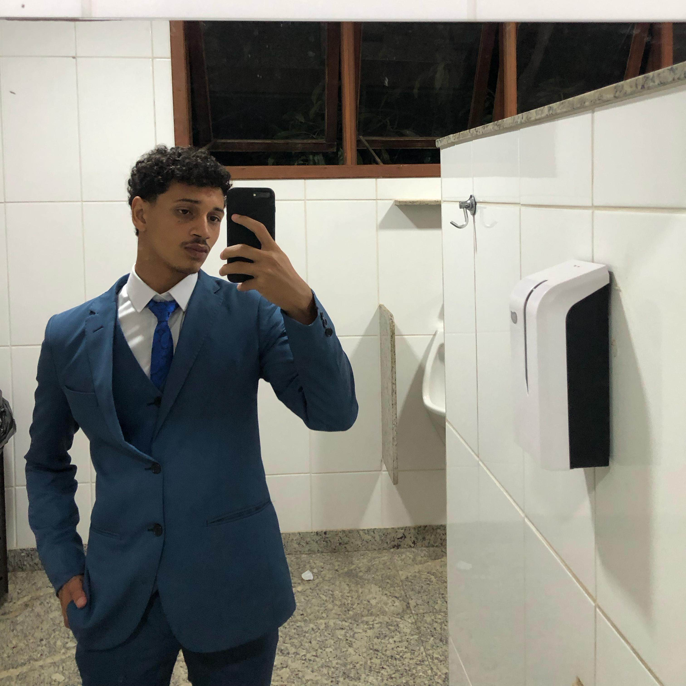

Lucas Gabriel Adelino Araújo
Brasileiro, 18 anos
Rua São Silvério, 513
Bairro Kennedy - Betim - MG
Telefone: (31) 9 80215875
E-mail: lucasgabrielz2208@gmail.com

Educação
Ensino médio concluído - 12/2024 - Escola Estadual Amélia Santana Barbosa
Bacharelado Sistemas de Informação - Pontífica Universidade Católica - 01/2025 - Em andamento.
Qualificações
Curso básico informática – Instituto Pinduca - concluído em março/2021;
Curso básico elétrica – Instituto Pinduca - concluído em julho/2021;
Aprendizagem Industrial em Processos Administrativos - Senai - concluído em 07/2023;
Aprendizagem Industrial Manutenção Mecânica Industrial - Senai - concluído em 07/2024.
Habilidades
Boa comunicação oral e escrita;
Aprendizado dinâmico e contínuo;
Proatividade
Bom relacionamento interpessoal;
Rapidez e Controle Emocional durante tomadas de decisão.
Outras Informações
Conhecimentos em adminstração (setor de RH e DP), metrologia e leitura e interpretação de desenho técnico;
Habilitação - Categoria B.
Experiência Profissional
Auxiliar de Produção - Teksid Brasil
02/2025 - Atualmente.